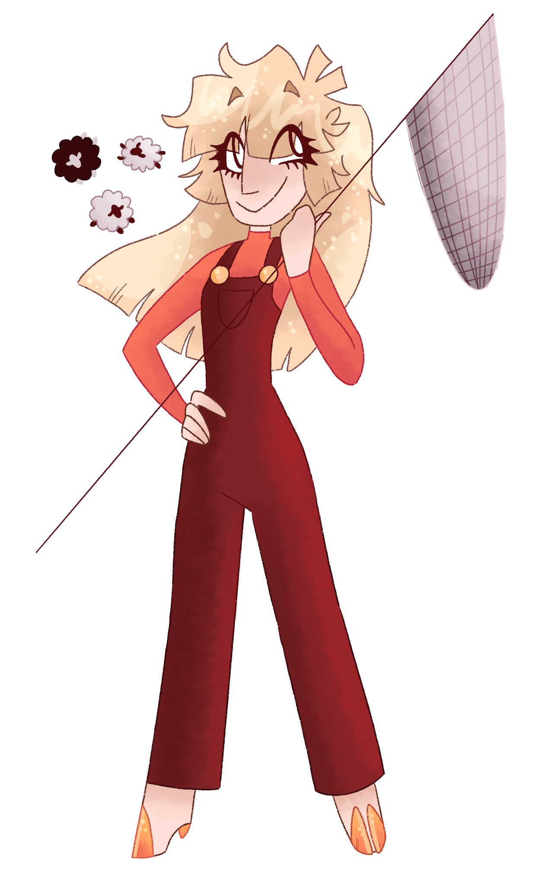
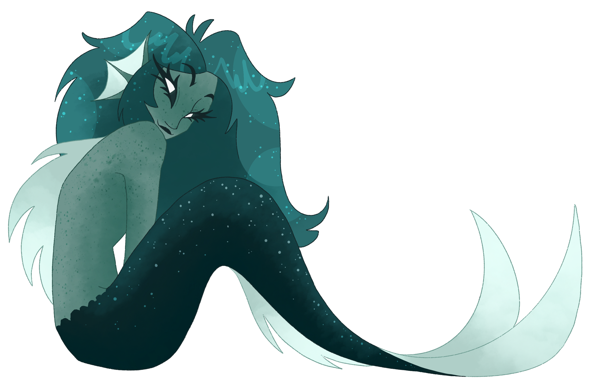
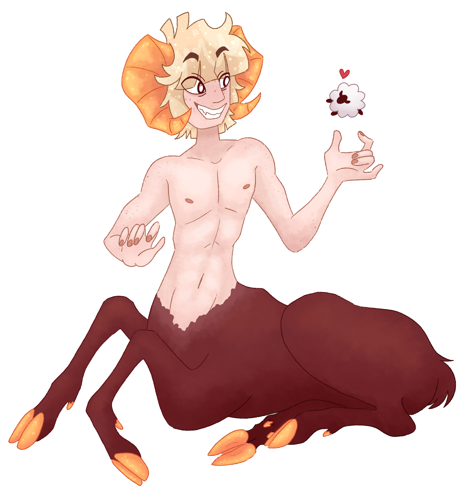
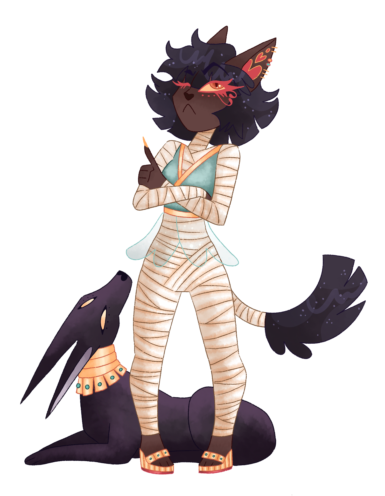
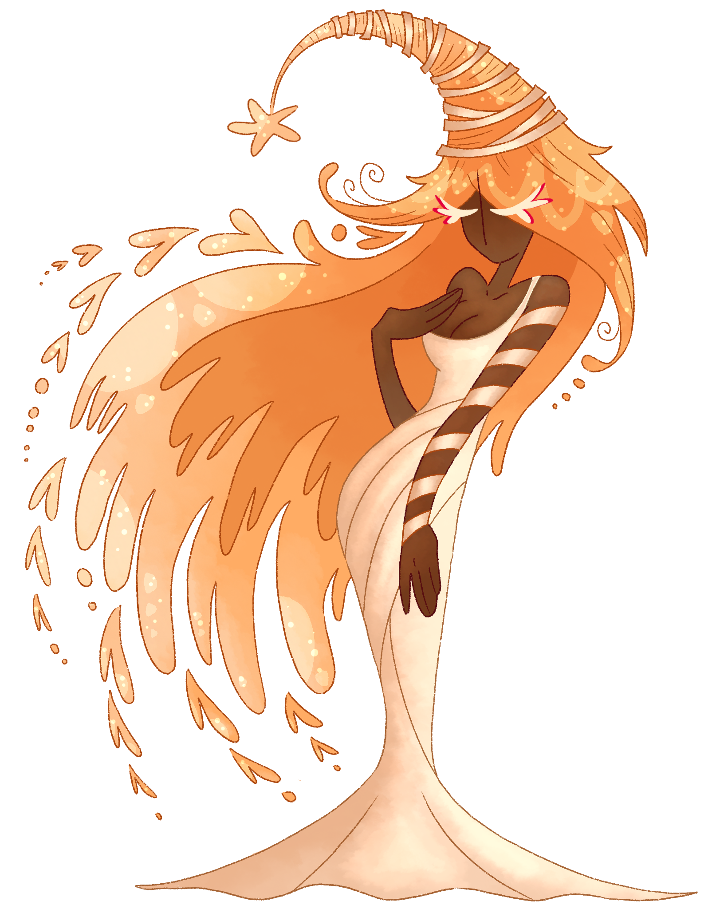
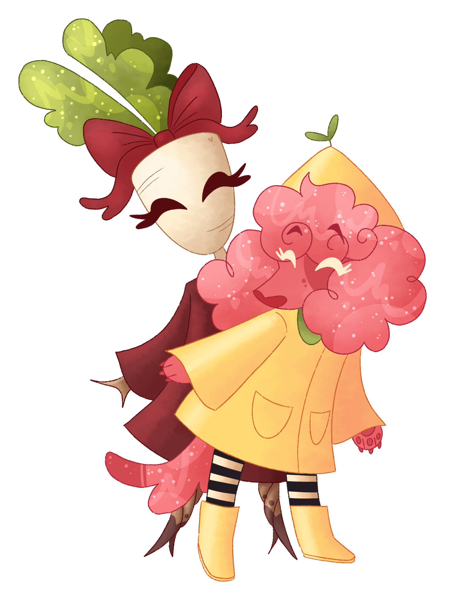
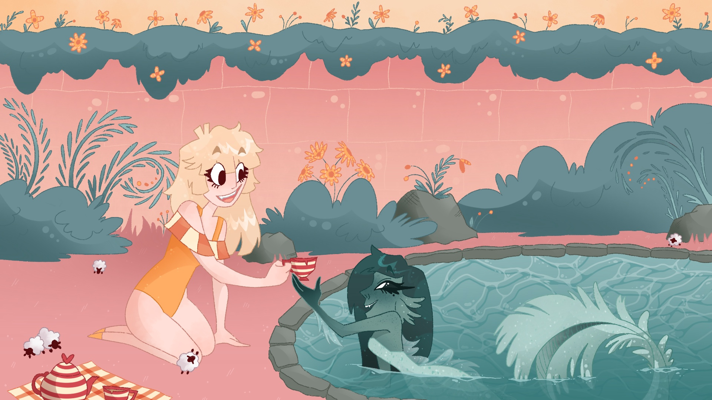
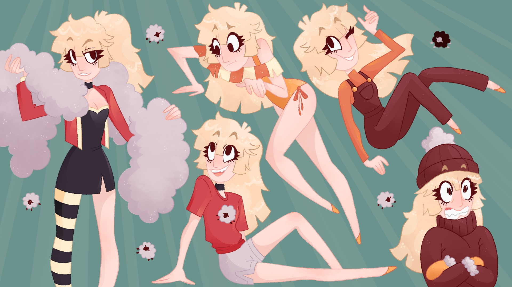
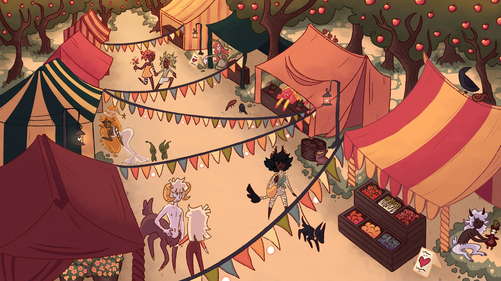

The theme for this virtual art exhibition revolves around whimsical forests, their magical inhabitants, and finding a fulfilling life within the strangeness sewn into the very fabric of their world. After all, weird is the new normal. The trees can talk, the deer have too many eyes, and pondside tea parties are an average pastime! There are mermaids in your community pools and tiny sheep flurry in airborne herds like clumps of cottonwood fluff. Color is wildly abundant and caring neighbors are never too far away; perhaps the local shepherd can let you in on some of the local gossip if you help her wrangle her flock. My exhibition will display a series of illustrations set in the world described above; visitors can expect to see eccentric characters and the colorful setting they live in. From mermaids and itty bitty sheep to tree women and sentient rutabagas, viewers are in for a treat as delightful and whimsical as the denizens of the forest.
Character Bios
Click on each character to learn more about them!

Hennley

Darcie

Moira

Bastet and Anubis

Larch

Bibi and Ruthabaga
Hennley
Hennley is Gapachi Forest’s very own cottonwood sheep shepherd! With her butterfly net and a lot of patience, she wrangles her tiny sheep every single day. They’re more than just simple pets or livestock to her – she loves them like family. You’ll never see Hennley without at least one of her sheep. Howard, the lone black sheep in her flock, can often be seen peeking his head out from the pockets of her overalls.
Darcie
Darcie is Hennley’s best friend and the local algae enthusiast! She makes sure her pond’s ecosystem is in tip-top shape at all times. She sees Hennley every Tuesday for tea, but she often wishes she could venture out onto land once in a while. One of her biggest dreams is to explore the world outside her little pond – she especially wants to see Hennley’s ranch in person.
Moira
Moira is Hennley’s older brother. Hennley has sheep hooves, but Moira got most of the sheep genes, as you can see. He loves the flock, but he was more than happy to let Hennley inherit the family ranch. After all, he’s married with two children. Magpie, his half-snake wife, is more than happy that he occupies his time with their daughters instead of the sheep.
Bastet and Anubis
Bastet is self-proclaimed royalty – all because her parents named her after an Egyptian goddess. She’s a bit snooty, but she’s the most generous woman in the woods. She donates a lot of her wealth to the local charities, and her dog, aptly named Anubis, came from the shelter she volunteers at every weekend.
Bibi and Ruthabaga
Bibi and Ruthabaga live in the cottage down by the ocean. Bibi pulled Ruthabaga right out of the ground, and they’ve been friends ever since. They run one of the best produce stands down at the marketplace! Ruthabaga has found a lot of success in selling handmade dresses, dolls, and fabric. She sources the wool straight from Hennley’s ranch.
Larch
Larch is the wisest witch in the wood! She’s also the matriarch of the entire community. She’s who everyone comes to when they need a helping hand or a shoulder to cry on. She deeply cares for every creature of the forest, big and small, and has no qualms taking in anyone who may need it! Often referred to as “Mama Larch”, she has no problem defending what’s hers when the occasion calls for it.
Hennley Turn-Around
(Digital, 1920 x 1080)
This is Hennley. Hennley is the main focus of this magical little world – she’s the local shepherd who inherited the Cottonwood Sheep Ranch from her late parents. It’s her sworn duty to nurture and protect her teeny little flock with pride and heart. This is a turn-around of her full design (her work uniform, specifically). Visually, she’s one of the more average members of the community, but under the surface, she’s part sheep herself. However, small hints can be seen peeking their way through; she has hooves! Get her fired up, though, and you may see more animal than girl.

Pondside Tea Party
(Digital, 1920 x 1080)
Pondside tea parties are a favorite pastime of shepherd Hennley and her best friend, Darcie – a pond mermaid and local algae conservationist. Hennley is especially fond of Darcie’s pond because the grass is pink! It’s a fun treat for her flock to munch on every Tuesday. This piece is a depiction of one of those many tea parties between Hennley and Darcie. Despite the differences in their species, the pair always finds a way to spend time together.
Bibi by the Sea
(Digital, 1920 x 1080)
Bibi is a cocker spaniel with a love for gardening. She lives in a little yellow cottage by the sea – a cottage that once belonged to her dear mother. Her roommate, Ruthabaga, is as home-grown as you can get. She crawled straight out of the garden, and now she’s here to stay! Bibi certainly doesn’t mind. It means she’s not alone anymore. She gets a wide array of visitors to her garden throughout the day. One of her most frequent guests is a spindly orange deer with a myriad of eyeballs. The one in the middle of his forehead always lets off an eerie glow… I wonder what that’s about?

Hennley’s Wardrobe
(Digital, 1920 x 1080)
There’s more to Hennley than just her work uniform! From partywear and pajamas to swimsuits and snow hats, she’s ready for anything! This piece is to show the versatility of characters within the forest. While it only represents Hennley, it’s purpose is to show the many colorful facets of her character that solidify her place in her community. Despite the strange nature of her world, there’s a sense of familiarity for the viewer, too.

Gapachi Forest Marketplace
(Digital, 1920 x 1080)
The Gapachi Forest Marketplace is the social hub of the community! Inhabitants from every corner of the forest come here to shop and catch up with their friends. Here, you can shop for fresh produce, new dresses, or a spell or two from the local witch. Whatever you need, you’ll probably find it in one of the many stalls. When you’re done, why not pick some apples from the orchard surrounding it? I’m sure the crows wouldn’t mind sharing (if you ask nicely, that is).
Shepherd's Quarters
(Digital, 1920 x 1080)
The inside of the Cottonwood Sheep Ranch’s shepherd’s lodge is a secret to many, but not to you! Hennley is very private about her room, but she doesn’t mind sharing it with her flock on particularly chilly nights. Bright magentas and golds contrast with earthy greens and browns to create a warm environment that Hennley loves to call home. Her sheep have no problem squeezing under doors and windows for a surprise visit.
Bubble Buddies
(Digital, 1920 x 1080)
When pondside tea parties are simply not enough, Darcie can magic up a bubble helmet that allows Hennley to venture to the bottom of the pond! It’s a nice break from the world above, and it allows Hennley to spend a bit more quality time with her dearest friend. Despite the initial grey, murky appearance of the water from the shore, the pond floor is teeming with life and color. Biological differences can’t stop this dynamic duo from hanging out!
Thank you so much for visiting!
I hope you enjoyed your time in the forest! We all loved having you here.